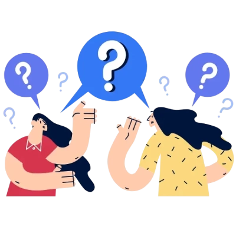
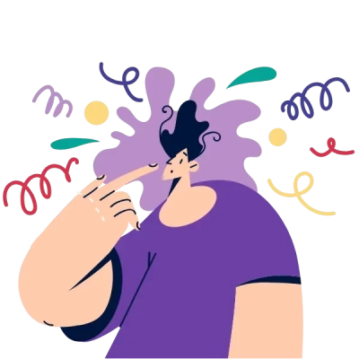
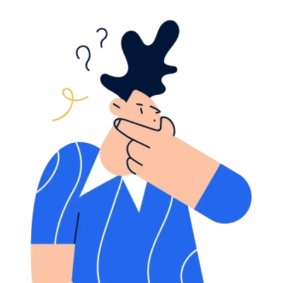
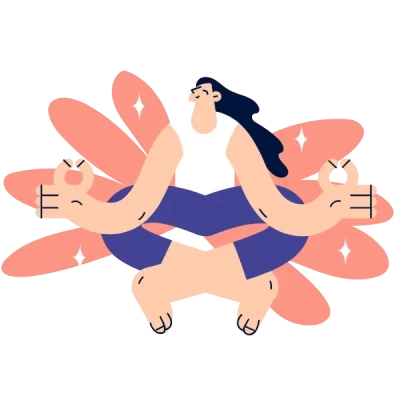
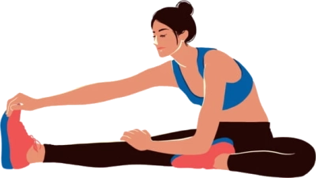
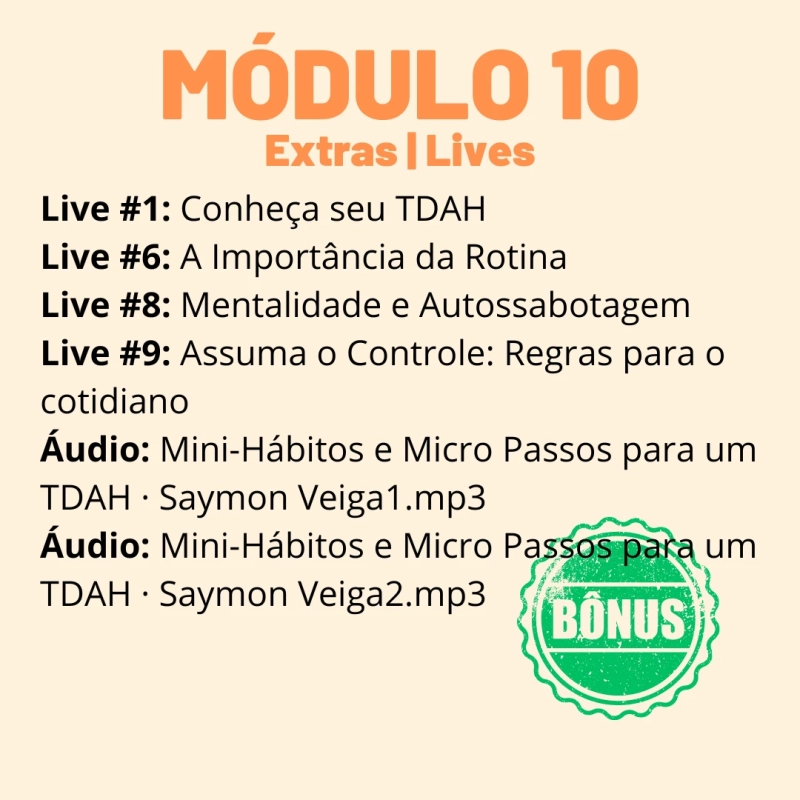
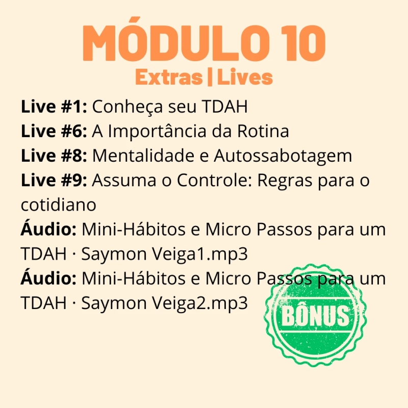

Descubra se você sofre de TDAH! 🔍
Com apenas alguns cliques, você terá uma análise exclusiva e prática para entender melhor o seu perfil.
Escolha uma opção para começar sua jornada de autoconhecimento! 🌟
Qual é a sua idade?
Isso nos ajudará a obter uma resposta mais precisa com base na sua faixa etária
Você costuma ter baixa motivação para iniciar alguma tarefa?
A seguir responda a sequência de perguntas para analisarmos o seu nível de TDAH
Você costuma ter muitos pensamentos acelerados?
Você tem mudanças constantes de humor?
Você geralmente tem a autoestima baixa?
Com que frequência você costuma esquecer das coisas?
Com que frequência você esquece palavras ou expressões durante uma conversa?
Com que frequência você se distrai com atividades ou barulhos ao seu redor?
Qual das opções abaixo mais te distrai e te faz perder o foco?
Você se sente sobrecarregado ao realizar tarefas complexas que exigem muito de você?

Como você costuma lidar com o estresse?
Com que frequência você interrompe outras pessoas durante as conversas?
Com que frequência você se pega perdido em pensamentos distantes enquanto está fazendo algo?
Com que frequência você costuma esquecer onde deixou as coisas?
O TDAH não precisa impedir você de alcançar seus objetivos
Ao avaliar suas respostas neste questionário, poderemos determinar seu tipo de TDAH e elaborar um plano de ação para ajudar você a manter o foco e alcançar seus objetivos.
Comer ou comprar coisas melhora seu humor?
Se pudéssemos tratar o TDAH, qual dessas áreas você gostaria de priorizar?
Vamos criar um plano especialmente para você,
desenvolvido por um grupo de psicólogos cognitivos. As pesquisas comprovam que nossas ações refletem nossos pensamentos e emoções.
Ao trabalhar os fatores emocionais que influenciam o TDAH, podemos reduzir os sintomas e aumentar sua produtividade de forma eficaz.
Você sabia que um plano personalizado pode transformar sua forma de lidar com o TDAH?
Por que ter um plano personalizado?
Um plano personalizado foca nas suas necessidades específicas, ajudando a melhorar a concentração, reduzir a procrastinação e organizar sua rotina. Imagine como seria superar esses desafios diariamente!
Você já pensou em como seria ter um guia para superar os desafios do TDAH?
Tudo em um único lugar!
Seu plano não é apenas um guia; é um programa completo que ajuda você a transformar seu dia a dia, com ferramentas práticas e apoio contínuo para enfrentar os desafios do TDAH.
Como seria sua vida se você pudesse controlar os sintomas do TDAH?
Vida mais Organizada
Isso é possível! Nosso plano foi desenhado para transformar essas respostas em realidade, ajudando você a ter mais equilíbrio, sucesso e controle no dia a dia.
Preparando...
O nosso grupo de psicólogos estão preparando o seu plano exclusivo e personalizado.
Agora imagine você
alcançando esses mesmos resultados.
Sua análise está pronta! Descubra seu plano personalizado agora.
Análise inicial do seu perfil
- ✔ Mudanças de humor
- ✔ Ansiedade
- ✔ Desatenção
- ✔ Desorganização
- ✔ Fadiga emocional
Parabéns por chegar até aqui! Seu plano personalizado está pronto e pode ser o primeiro passo para superar os desafios do TDAH. Clique no botão abaixo e veja como você pode começar a transformar sua rotina hoje mesmo.
Conheça agora o seu
Plano Exclusivo
O que você vai transformar em sua vida após adquirir o seu Plano
🌞 Acordar se sentindo motivado e energizado, pronto para conquistar o dia.
🎯 Ter clareza sobre seus objetivos diários e saber exatamente o que realizar sem procrastinar.
💪 Diga adeus à sobrecarga e ao estresse enquanto enfrenta as tarefas com confiança.
🌱 Abrace o crescimento pessoal e o autoaperfeiçoamento à medida que se liberta dos sintomas do TDAH.
🤝 Fortaleça seus relacionamentos com uma nova confiabilidade e produtividade.
🌟 Veja sua autoestima alcançar novos patamares, desbloqueando todo o seu potencial.
Transforme sua vida agora igual a Fernanda!
 

Benefícios do Curso
📋 Programa Personalizado: Receba um plano adaptado às suas necessidades específicas.
📚 Metodologia Comprovada: Técnicas baseadas em estudos científicos para criar e manter hábitos positivos.
💡 Apoio Contínuo: Acesso a materiais extras e lives para aprofundar seu aprendizado.
🎥 Flexibilidade: Aulas em vídeo e áudio para você estudar no seu ritmo.
📈 Resultados Visíveis: Acompanhe seu progresso e veja as melhorias em sua vida diária.